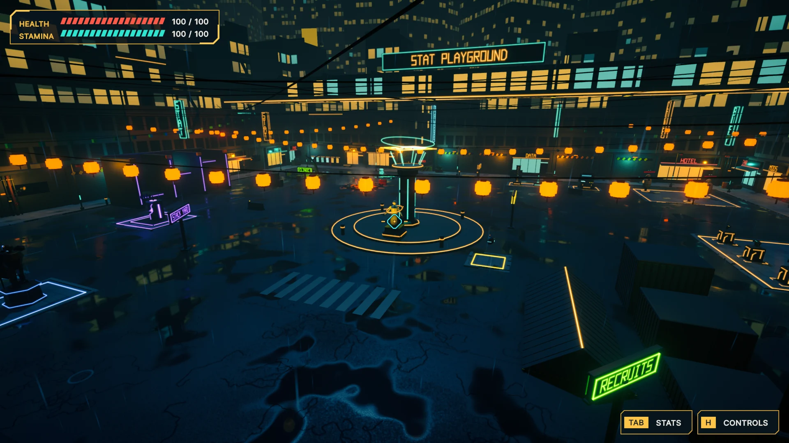

Independent project · Work in progress
StatSystemPro
Work in progress. This Unity Asset Store package is not yet released. Features, visuals and names may change.
A Unity package for runtime stats, modifiers and resources, with editor tools for inspecting dependencies and tracing calculations.
Stat Trace
Dependencies and calculations
The graph shows how stats and modifiers connect. The calculation audit breaks a selected value into its contributing stages, so the result can be inspected alongside the dependency graph.
Captured from the current tools running in the Unity editor.


Stat Playground
Runtime sample
The playable sample puts stat changes into a game context. These captures come from the standalone build, showing the arena and an equipment comparison with changes to damage, attack speed, range and other values.


Battle benchmark
Stats in a battle sample
The battle sample exercises multiple characters and stat systems, with visible critical hits and modifiers during combat.

More work